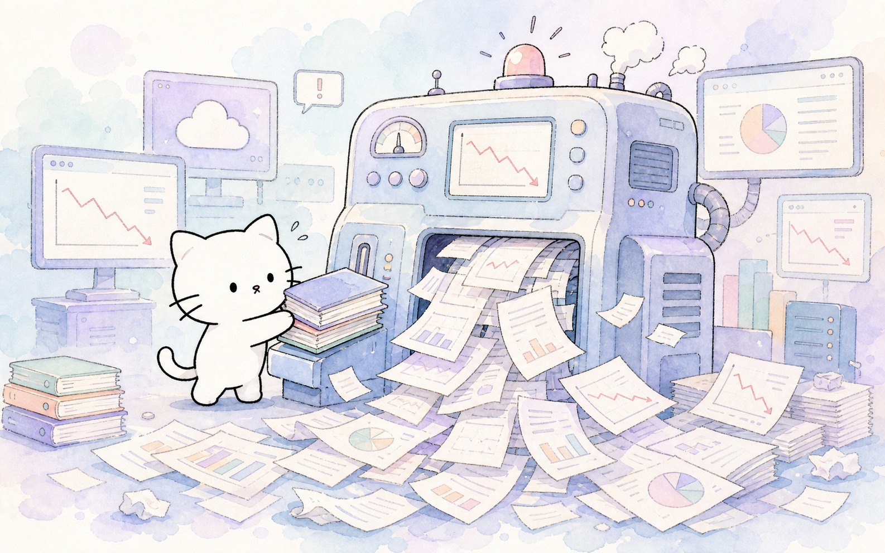
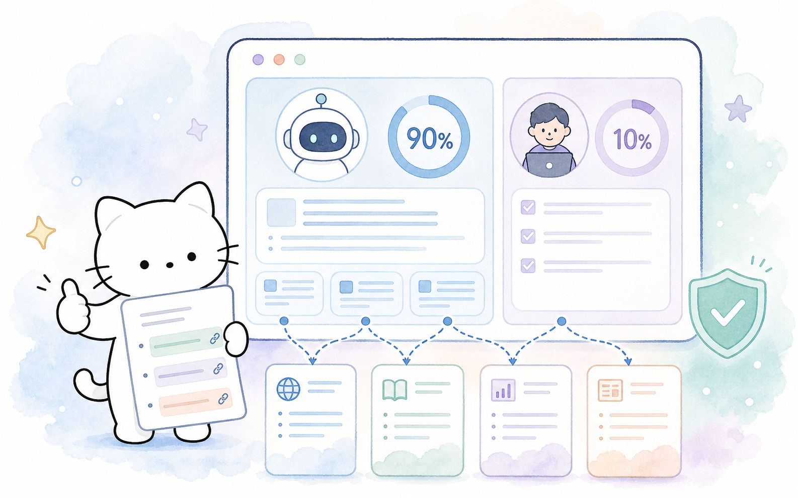

Myno의 블로그
Myno의 블로그57 — RAG도 미세조정도 한계… 실시간 모델 만드는 '하이퍼네트워크' 뜬다
"AI 에이전트가 장시간 독립적으로 일하게 해놓으면, 결국 사람이 다시 맥락을 보충하고 결과를 검증해야 한다." 벤처비트가 최근 지적한 이 문제는, AI 업계가 기대했던 '고자율성 에이전트'의 현실을 정확히 꿰뚫고 있다. 감독 비용이 생산성 향상을 상쇄하는 지경에 이르렀고, 이 문제는 모델 오케스트레이션 기술이 아니라 AI 모델이 기업 지식을 얼마나 안정적으로 활용할 수 있는가에 달려 있다. 이 한계를 넘기 위한 새로운 접근법, '하이퍼네트워크'가 떠오르고 있다.
"데이터 많을수록 정확도가 떨어지는 역설"
AI 기업 크로마가 주요 18개 모델을 대상으로 테스트한 결과, 모든 모델이 입력 데이터가 길어질수록 정확도가 감소하는 현상이 확인됐다. 이건 모델 성능 부족이 아니다. 트랜스포머의 어텐션 구조에서 비롯되는 근본적 특성이다. 즉, AI 에이전트가 더 많은 기업 데이터를 처리할수록 오히려 판단의 안정성이 떨어질 수 있다는 뜻이다. 긴 프롬프트 속에서 중요한 정보를 놓치거나, 업무 시간이 길어지면 맥락이 희미해지는 현상 말이다.

"미세조정도, RAG도 한계가 있다"
기업이 자체 데이터를 모델에 주입하는 대표적 방법인 미세조정(fine-tuning)과 검색증강생성(RAG)도 이 문제를 피하지 못한다. 미세조정 모델은 오래된 정책을 기반으로 답변할 수 있고, 인컨텍스트 러닝 모델은 긴 프롬프트에서 중요한 정보를 놓칠 수 있다. 더 골치 아픈 건, 두 경우 모두 결과가 그럴듯하게 보이기 때문에 사람이 직접 확인해야 한다는 점이다. 결과가 자신감 넘치게 틀리면, 검토 비용은 더 늘어난다.
"하이퍼네트워크: 모델의 모델을 만든다"
이 한계를 해결하기 위한 새로운 접근법으로 하이퍼네트워크(Hypernetworks)가 주목받고 있다. 하이퍼네트워크는 다른 신경망의 가중치를 생성하는 신경망이다. 기업 정책과 문서를 입력받아, 특정 업무에 최적화된 소형 모델이나 어댑터를 추론 시점에 즉석에서 생성한다. 2016년에 처음 등장한 개념이지만, 최근 실제 언어모델에 적용되는 사례가 등장했다. 사카나 AI의 '텍스트-투-LoRA'는 자연어 설명만으로 LoRA 어댑터를 생성할 수 있음을 보여줬고, 2026년 발표된 SHINE 연구도 이 방향의 유망성을 입증했다.
"소형 전문 모델이 대형 모델보다 싸다"
반복적이고 범위가 제한된 업무에서는 대형 범용 모델보다 소형 전문 모델이 더 효율적이다. 2025년 엔비디아 연구진에 따르면, 반복 업무에서 소형 모델은 대형 모델 대비 10~30배 낮은 비용으로 충분한 성능을 제공한다. 미국 팔로알토의 스타트업 네이스닷AI는 '메타모델(MetaModel)'이라는 가중치 생성기를 활용한다. 기존 AI처럼 고정된 데이터를 매번 미세조정하는 대신, 추론하는 순간에 기업의 최신 정책을 반영한 모델 매개변수를 즉석에서 만들어내는 방식이다.
"90/10, 핵심은 검증 가능성"
AI가 업무의 대부분을 도맡는 시대가 열리면서, 관심은 '나머지 10%를 어떻게 검증할 것인가'로 옮겨가고 있다. 네이스닷AI는 전체 분석 업무의 90%를 AI가 초고속으로 처리하고, 사람이 마지막 10%만 최종 검증하는 '90/10' 협업 모델을 제안한다. 이를 위해 모델의 모든 주장에 대해 근거 문서를 연결하는 그라운딩(grounding) 기술이 핵심이다. 할루가드(HalluGuard) 같은 시스템은 각 주장의 근거 여부를 표시하고 참조 문서를 제공한다. 물론 하이퍼네트워크도 초기 단계다. 보정(calibration) 문제와 대규모 확장 가능성은 아직 해결 과제로 남아 있다.
